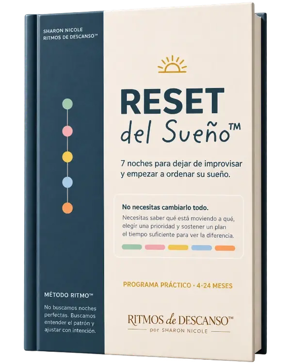

Las siestas cambiaron. Los horarios están raros. Hay despertares. La hora de dormir se complicó. Tal vez ahora también está amaneciendo antes que el sol.
Y tú estás intentando arreglar cada cosa por separado.
El problema es que el sueño no funciona por partes.
Kit Completo™ te ayuda primero a entender las piezas y después a ponerlas en orden.
Recibe los 5 SOS™ + Reset del Sueño™, mi ruta práctica de 7 noches para identificar qué necesita ajustes y empezar a devolverle estructura al sueño de tu bebé.

Cómo funciona
Primero entendemos. Después ajustamos.
No quiero que cambies cinco cosas esta noche.
Quiero que puedas entender: qué está pasando, qué puede estar provocándolo y qué tiene sentido trabajar primero.
Por eso Kit Completo™ tiene dos partes:
01 · Entender
Tus 5 SOS™ te ayudan a profundizar en cada área:
Siestas
Despertares
Hora de dormir
Madrugadas
Ritmos del día + alimentación
02 · Ordenar
Reset del Sueño™ te ayuda a dejar de mirar cada problema aisladamente y seguir una ruta durante 7 noches para observar, priorizar y hacer ajustes con intención.
Esta es la diferencia fundamental entre ambos kits:
Los SOS te ayudan a entender las piezas. Reset te ayuda a decidir cómo empezar a ordenarlas.
Qué incluye
Todo esto está dentro:
Kit SOS™ completo
SOS Bebé Madrugador™Investiga qué está adelantando el inicio del día.
SOS Ritmos del Día + Alimentación™Organiza las 24 horas mirando sueño, vigilia y alimentación.
SOS Hora de Dormir™Ordena el camino hacia el sueño.
SOS Siestas™Recupera estructura en el descanso del día.
SOS Despertares™Entiende qué está fragmentando las noches.
+
Reset del Sueño™
7 noches para dejar de improvisar.
Una ruta práctica para observar el sueño completo, identificar qué necesita atención primero y empezar a hacer ajustes de forma ordenada.
Tu punto de partida
¿Por dónde empiezo?
“Sharon, ese es precisamente mi problema. No sé por dónde empezar.”
Entonces empieza por Reset.
No necesitas leer los cinco SOS antes de hacer nada.
Reset te ayudará a mirar el panorama completo e identificar qué área necesita tu atención primero.
Cuando encuentres esa pieza, tendrás el SOS correspondiente para profundizar y trabajarla.
RESETte ayuda a encontrar el camino
↓
SOSte ayuda a profundizar donde lo necesitas
Ese es el sistema.
Para quién es
Kit Completo™ es para ti si…
✓ Sientes que hay varias cosas desorganizadas al mismo tiempo.
✓ Has probado ajustar horarios, siestas o rutinas pero no sabes qué está provocando realmente el problema.
✓ Consumes muchos tips de sueño pero terminas todavía más confundida porque no sabes cuáles aplican a tu bebé.
✓ O simplemente quieres dejar de apagar fuegos y empezar a mirar el sueño como un sistema.
El sistema completo
No necesitas probar más cosas.
Necesitas saber qué tiene sentido probar primero.
Llévate el sistema completo de Ritmos de Descanso™:
5 SOS™ + Reset del Sueño™ · 7 noches
No todos los bebés se trabajan igual. Por eso primero observamos, después entendemos y entonces ajustamos.